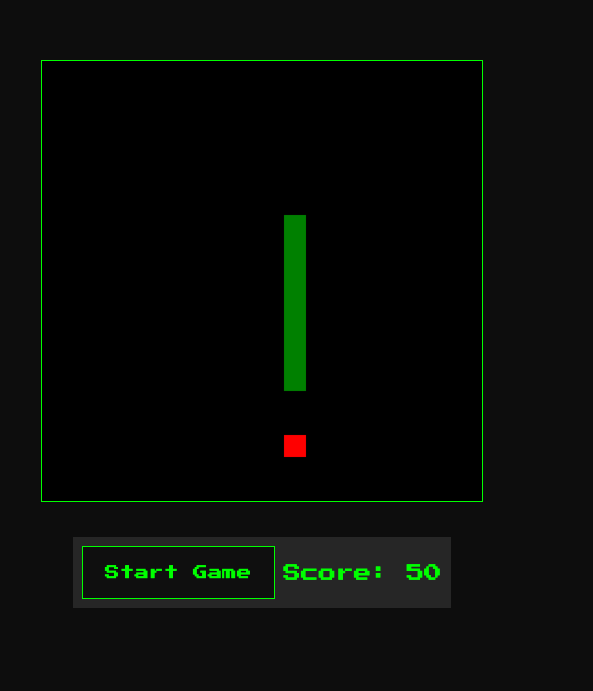

how to make a snake game
this tutorial will guide you through every step to write your very own snake game.
now, we simplified things a bit, so you don't start thinking I am an alien talking alien to you (which I might still very well be 👽). so, you will see some differences between the end result and the code I'm sharing in my github repo. the differences are marginal and won't affect the functioning of the game:
-
I changed the way the browser returns the "game over" message so that it sits better with the general styling of the game. In technical terms I don't use your system message, but a "modal" which offers more control (styling, positioning, ...)
-
I added a "start game" button
-
I made the styling so that it all looks like an old retro game, but you might not even like that, so nothing lost there either I guess 😂 when looking at my .css file (which is for styling the game) you will find useful comments so can see how the styling works
-
I added a "score" section
-
I added a "restart game" button
-
I added lines of programming wisdom that are rendered in the browser when you start the game, and every time the snake hits the food, so you can feel like you're learning something while playing the game
this is how my version of the game looks like, with the styling and modal alert messages included:

get yourself setup for some coding
before we can code, we need an editor. we suggest visual studio code.
download here. make yourself acquainted with this great tool by reading their manuals. you can find some good youtube tutorials, too. don't be afraid, the first steps look steeper than they are really...
been there, done that, but I'm still waiting for my t-shirt ðŸ˜
file structure
aight! so you are of the heard-headed type, huh? great you're still around. now, make this file structure in your VSC:
setting up the game area
in your index.html, you'll now set up the canvas. this is the area your snake will be able to navigate. for this example we'll go for a 400 by 400 pixels, but you can go for any size of your liking. There are a few things to consider though:
-
the canvas should be square
-
the canvas should not be too big, because then you'll have to scroll up and down to see the whole canvas - and that's not fun at all
-
the canvas should be big enough to be able to see the snake and the food
-
the smaller your canvas, the harder the game will be
copy this code into your index.html file: